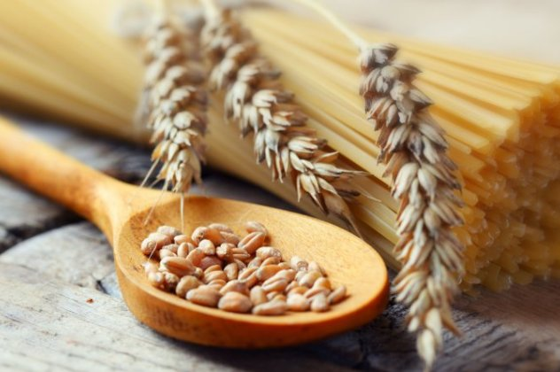
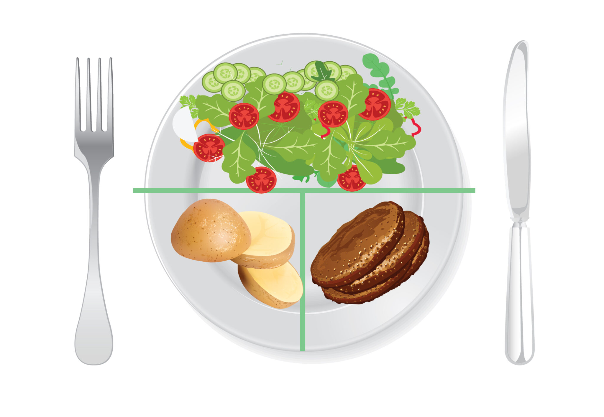

Βάλε πρωτεΐνη στο πρωινό σου
Βάλε πρωτεΐνη στο πρωινό σου
Και γιατί να μην τρώνε ψωμί με μέλι, γαλα αμυγδάλου με δημητριακά, κουλούρι Θεσσαλονίκης ή φρυγανιές με μαρμελάδα…
Τους εξηγώ… Μπορείτε να φάτε και τα παραπάνω (σίγουρα μερικές φορές θα το κάνετε) όμως αν καταλάβετε το όφελος της
πρωινής πρωτεΐνης τότε θα επιλέξετε εσεις για εσάς να την έχετε το πρωί (τις περισσότερες τουλάχιστον μέρες).
Γιατί λοιπόν η πρωτεΐνη είναι απαραίτητη το πρωί;
Για πάρα πολλούς λόγους (αναφέρω κάποιους παρακάτω):...Διαβάστε περισσότερα

Παχαίνει η γλουτένη...;
Γιατί άλλωστε να μας παχαίνει μια πρωτεΐνη; Γιατί αυτό είναι, το ξέρετε έτσι;
Τι είναι η γλουτένη;
Στο όρο γλουτένη ουσιαστικά περικλείονται οι πρωτεΐνες των δημητριακών: σιτάρι, κριθάρι, σίκαλη, βρώμη. Πρόκειται για πρωτεΐνες πλούσιες σε γλουταμίνες και προλαμίνες, οι οποίες δεν πέπτονται πλήρως και τελικά εισέρχονται στα κύτταρα ως άπεπτα πεπτίδια.
Να ξερετε:
Καμία επιστημονική μελέτη δεν συνδέει την κατανάλωση γλουτένης με Παχυσαρκία!
Ξέρετε πότε παχαίνει;...Διαβάστε περισσότερα

Η μέθοδος του πιάτου
Η Μέθοδος του Πιάτου, τo λεγόμενο #healthyeatingplate που δημιούργησαν expert διατροφής στο Harvard με σκοπό να μας εξηγήσουν απλά, πώς πρέπει να χτίζουμε ισορροπημένα και υγιεινά το πιάτο μας στα βασικά μας γεύματα..
Η μέθοδος του πιάτου απαιτεί να το χωρίσουμε σε τρία μέρη ως εξής:
...Διαβάστε περισσότερα